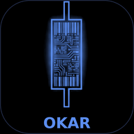

Wyckoff · VSA · O/D · Elliott · ICT · CRT
El usuario se crea desde la Consola de Firebase (Authentication → Users → Add user). Esta app no permite registro abierto.
¿No entra con ninguna contraseña? Restablecer configuración de este dispositivo